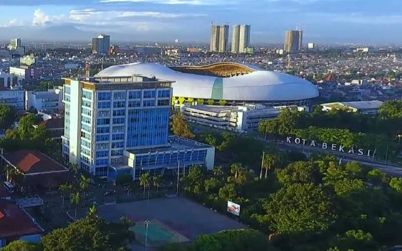
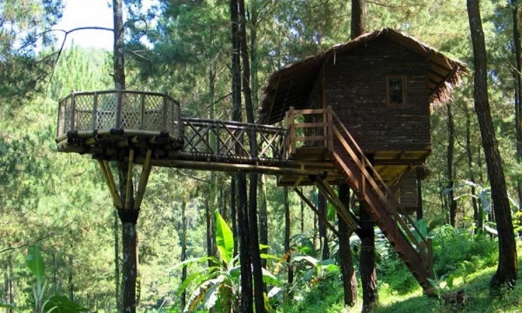

Sejarah

Dayeuh Sundasembawa atau Jayagiri, itulah sebutan Bekasi tempo dulu sebagai Ibukota Kerajaan Tarumanagara.
Luas Kerajaan ini mencakup wilayah Bekasi, Sunda Kelapa, Depok, Cibinong, Bogor hingga ke wilayah Sungai
Cimanuk di Indramayu.
Menurut para ahli sejarah dan fisiologi, letak Dayeuh Sundasembawa atau Jayagiri sebagai Ibukota Tarumanagara
adalah di wilayah Bekasi sekarang. Dayeuh Sundasembawa inilah daerah asal Maharaja Tarusbawa (669-723 M)
pendiri Kerajaan Sunda dan seterusnya menurunkan Raja-Raja Sunda sampai generasi ke-40 yaitu Ratu Ragumulya
(1567-1579 M).
Geografis

Kota Bekasi memiliki luas wilayah sekitar 210,49 km², dengan batas wilayah Kota Bekasi adalah:
| Utara |
Kabupaten Bekasi |
| Timur |
Kabupaten Bekasi |
| Selatan |
Kabupaten Bogor dan Kota Depok |
| Barat |
Dki Jakarta |
Wisata
Macet, padat, dan terpencil, selalu dikaitkan sama citra kota dan Kabupaten Bekasi. Padahal kalau kamu main
agak jauh sedikit, Bekasi juga dipenuhi banyak tempat wisata lho.
Curug Parigi

Curug Parigi ini berlokasi di Cikiwul, Bantargebang, Bekasi, Jawa Barat. Curug ini memiliki panorama yang
sangat indah dan cantik. Curug ini pernah di gunakan sebagai lokasi syuting salah satu judulnya adalah sang
penakluk yang di perankan oleh Suzanna.
Rumah Pohon Jatiasih

Ingin mengajak si kecil berwisata outbound yang kekinian di Bekasi? Maka Rumah Pohon Jatiasih dapat menjadi
jawabannya. Rumah pohon dengan konsep alam ini menghadirkan suasana yang sangat menyejukkan dan juga cocok
untuk berlibur bersama keluarga dan juga si kecil.